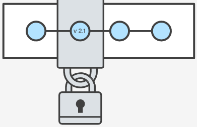
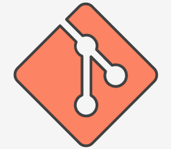
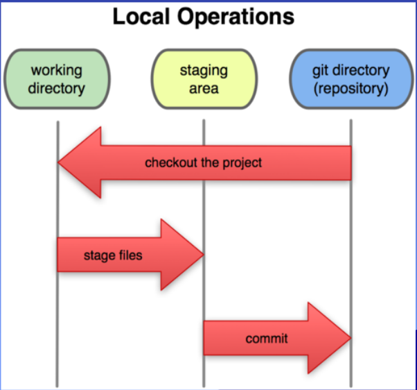
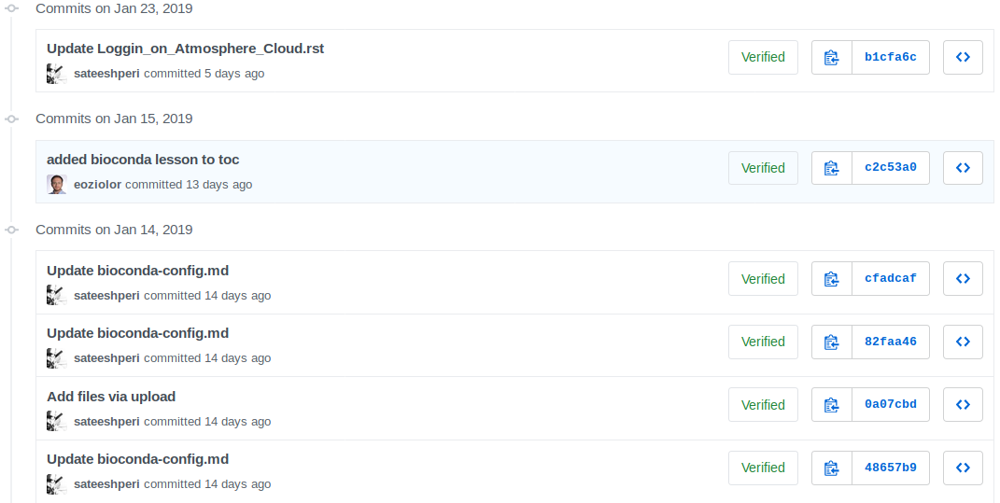
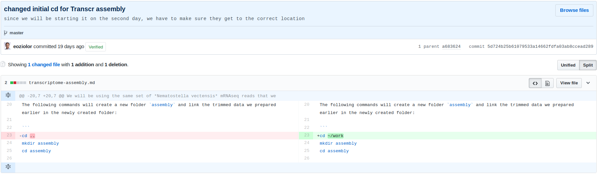

13. GitHub: How not to lose your entire analysis!¶
13.1. Why Version Control?¶
Version control is essential in creating any project that takes longer than 5 minutes to complete. Even if your memory is longer than 5 minutes, next month you are not likely to be able to retrace your steps.
vc_logo
Version control will allow you to back up every point at which your analysis is standing, provided you actively identify those points yourself. Imagine that every time you press the save key on a word document, every change between the last time you saved and now was saved in a different version of the document. This way, you’re only viewing the final version of your text, but if you wanted to, you could go back and view all of the old versions.

When you are doing this yourself, this can get cumbersome, so let git do it for you!
13.2. What is Git and why use it?¶
git_logo
Git is an open source distributed version control system that facilitates GitHub activities on your laptop or desktop. Version control using Git is the most reasonable way to keep track of changes in code, manuscripts, presentations, and data analysis projects
13.3. Options in Git¶
The name of the software you’re running is git, and you can use commands in a similar fashion as what you’ve learning in bash. The syntax of git commands is:
git verb options
In git, there are different git commands (verbs) and different options for those commands.
13.3.1. Configuring global options¶
When you start using git, you build repositories, which hold all the scripts and notes for each of your projects. It is recommended that you use one repository for each project.
In order for git to recognize you as the owner of those repositories, you need to first set up the global options for git on your virtual (or personal) machine.
$ git config --global user.name "Elias Oziolor"
$ git config --global user.email "emoziolor@ucdavis.edu"
I told git who I am and where to find me. Make sure that this is the same e-mail address that you have or will open a GitHub account with.
13.3.2. Initiating a repository¶
Once you’ve chosen a location for all of your work on this project, in our case the ~/project directory, you can create a repository for this project.
cd ~/
mkdir project
cd project/
What is a repository: A Git repository is virtual storage for your project. It allows you to save versions of your code, which you can access when needed. Use a single repository for each project.
Sample setup: I like to include two folders in my repositories: 1) data; 2) scripts.
To start a repository you’ll use the git init command. git init is a one-time command you use during the initial setup of a new repo. Executing this command will create a new .git subdirectory in your current working directory. This will also create a new master branch.
git init
If you type the command ls -a, you will be able to see that there is a .git file in the folder, which is not your git repository.
13.3.3. Handling a repository¶
git_local
Once you have a repository, let’s start using it to back things up. There are several terms that you need to be familiar with to be comfortable with git:
Staging files: When you stage files for commit, this means that you are telling git to save the changes in these particular files in the commit that you are about to do.
Commit: When you perform a commit, you log any changes to staged files and lock those changes to this particular time.
Commit message: When you perform a commit, you are allowed to enter a message, which will later be used to remind you what you did in this particular chunk of work that you commited. IMPORTANT: Make sure those messages are informative! 3 months from now, you might want to get back to something that is no longer working and figure out where the issue originated, if you make generic commits messages like “Worked on file.txt”, you’ll be in deep trouble.
13.3.4. Staging¶
Now that you’ve started a repository (or a repo), let’s create some folders:
mkdir data
mkdir scripts
Now, in most cases, the data you have in your data folder will be way too large to commit in git. Git is created to commit code and small amounts of text. What we need to do is ignore everything that is too large.
We do this by creating a .gitignore file, which contains all of the directories or types of files that we would like to ignore. It starts with a . because it is a “hidden” file. Meaning if we type ls, we won’t be able to see it. We would need to specify ls -a
touch .gitignore
nano .gitignore
/data
*.fasta
Now we’ve created a file, which will force git to ignore everything that is in the folder /data and any file that is of the filetype fasta. You can do this with any folder or filetype you would like!
Let’s start with our first commit. We want to first stage the .gitignore file.
git add .gitignore
git status
Now the message that git shows you should be that your .gitignore file is in green (staged for commit), while eall other files/folders are in red (not staged).
We can start by committing this set of changes:
git commit -m "Initial commit: .gitignore file for /data and fasta"
There we go! First commit is done. To track what happened you can type:
git log
in the repository folder and that will show you a set of commits that you’ve done so far.
While you now have your first commit, you can start committing everything else in your repo without worries that it is too large (because now git will ignore the large things).
git add --all
This command will stage every change you’ve made since your last commit.
git commit -m "Commit of initial repository setup"
git log
If you are wondering if all the files are truly staged for commit before you commit them, you can check again with git status
13.3.5. Backing up your repositories with GitHub¶
Great! Now you have a repo with 2 commits. This is locally backed up now, but what if you lose your computer? This is another strong asset of git - it can back up files remotely.
GitHub is online virtual space to store Git repositories and provides an interface for exploring git repositories.
Let’s go to GitHub and create a profile. If you have one already, take a second to admire your work.
Once you have set up a profile, it’s time to create a repository in github, which will then receive all the backups from the repository you created on your local machine.
Go to your profile and add click the plus button.

Then fill out the necessary information for your repository to be distinct and recognizeable.

When you’ve created the repository, GitHub will tell you what you need to do in order to sync your two repositories into one.
Only use the last two lines, because you’ve already committed changes!

Once you execute those two lines in your terminal, you should be able to see a reflection of your local repository online.
Every time you type:
git push origin master
You will be prompted for your Github username and password at this point
To avoid having to type your username and password each time you push/pull from your github repos, read about Secure Login here: https://help.github.com/articles/connecting-to-github-with-ssh/
You will force git to back up all of your commits since the last time you pushed to be backed up online. FOR FREE!
13.4. Git-GitHub Overview¶
 git_overview
git_overview
13.5. Exploring Github¶
git_ex_history git_ex_commit
13.6. Collaborating via GitHub¶
- GitHub Issues Issues are a great way to keep track of tasks, enhancements, and bugs for your projects. They’re kind of like email—except they can be shared and discussed with all.
Read more about Mastering Issues on Github here
- GitHub Pull-Requests
 git_pr
git_pr
Pull requests let you tell others about changes you’ve pushed to a branch in a repository on GitHub. Once a pull request is opened, you can discuss and review the potential changes with collaborators and add follow-up commits before your changes are merged into the base branch.
13.7. Look at others’ repositories:¶
13.8. Host Websites & Blogs on GitHub¶
GitHub Pages is an awesome feature that lets you host websites/blogs for you and your projects.
Hosted directly from your GitHub repository. Just edit, push, and your changes are live.
Read more about GitHub Pages here
13.9. Suggestions for good Git Usage:¶
- commit in recognizeable chunks of work
- commit more often than you think you should!
- place informative messages with every commit
- code a bunch!